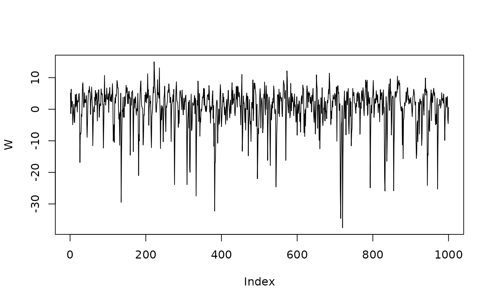

Ngme2 AR(1) model
AR1-model.RmdIn this vignette, we will introduce the autoregressive model in
ngme2.
Description
An autoregressive model of order 1 (AR(1)) specifies that the output variable depends linearly on its own previous values and on a stochastic term. The simplest AR model is an AR(1) model, which is given by:
\[\begin{align} X_1 &= \epsilon_1, \\ X_i &= \alpha X_{i-1} + \epsilon_i, \; i = 2, \dots , n, \end{align}\] where \(|\alpha| < 1\), \(\epsilon_1, ..,\epsilon_n\) is either i.i.d. NIG or Gaussian noise.
It is easy to verify that \[ K{\bf X} = \boldsymbol\epsilon,\] where \({\bf X} = (X_1, \dots, X_n)\), \({\boldsymbol \epsilon} = (\epsilon_1, \dots, \epsilon_n)\), and \[ K = \begin{bmatrix} 1 \\ -\alpha & 1 \\ & \ddots & \ddots \\ & & -\alpha & 1 \end{bmatrix}. \]
Usage
Use the model_ar1 or f(model="ar1") (in
formula) to specify a AR(1) model. Notice that AR(1) process is only
well defined in the integer mesh (it can have gaps), see the following
examples:
library(ngme2)
set.seed(16)
m1 <- model_ar1(3:5, noise = noise_normal())
#> as(<dgTMatrix>, "dgCMatrix") is deprecated since Matrix 1.5-0; do as(., "CsparseMatrix") instead
# check the operator matrix
m1$K
#> 3 x 3 sparse Matrix of class "dgCMatrix"
#>
#> [1,] 1.0 . .
#> [2,] -0.5 1.0 .
#> [3,] . -0.5 1
# length is 5 - 3 + 1
m2 <- model_ar1(c(2011, 2012, 2015, 2016), noise = noise_nig(mu=5, sigma=1.5))
m2$K
#> 6 x 6 sparse Matrix of class "dgCMatrix"
#>
#> [1,] 1.0 . . . . .
#> [2,] -0.5 1.0 . . . .
#> [3,] . -0.5 1.0 . . .
#> [4,] . . -0.5 1.0 . .
#> [5,] . . . -0.5 1.0 .
#> [6,] . . . . -0.5 1
# length is 2016 - 2011 + 1 = 6
# specify mesh with replicates
m3 <- model_ar1(c(1:5, 1:5), replicates = c(rep(1, 5), rep(2, 5)))
m3$K
#> 10 x 10 sparse Matrix of class "dgCMatrix"
#>
#> [1,] 1.0 . . . . . . . . .
#> [2,] -0.5 1.0 . . . . . . . .
#> [3,] . -0.5 1.0 . . . . . . .
#> [4,] . . -0.5 1.0 . . . . . .
#> [5,] . . . -0.5 1 . . . . .
#> [6,] . . . . . 1.0 . . . .
#> [7,] . . . . . -0.5 1.0 . . .
#> [8,] . . . . . . -0.5 1.0 . .
#> [9,] . . . . . . . -0.5 1.0 .
#> [10,] . . . . . . . . -0.5 1
# index with double is not supported
# not run:
# model_ar1(rnorm(10))Simulation
Simulating an AR(1) model with ngme2 is simple. Just
pass the corresponding model into simulate function.
n_obs <- 500
day <- 1:n_obs
Y <- simulate(
model_ar1(day, alpha = 0.5, noise = noise_nig(mu = 2, sigma = 2)),
seed = 16
)
# check the acf to see the correlation
acf(Y)
Estimation
In this part we will show how to estiamte the AR model using
ngme function. Here we can use ngme_control to
modify the control variables for the ngme. See
?ngme_control for more optioins.
x1 = runif(n_obs)
x2 = rexp(n_obs)
beta <- c(-3, -1, 2)
X <- (model.matrix(Y ~ x1 + x2)) # design matrix
Y <- as.numeric(Y + X %*% beta) # add some fixed effects
Y <- Y + rnorm(n_obs, sd = 1) # add measurement noise
# Fit the model with the AR1 model
ngme_out <- ngme(
Y ~ x1 + x2 + f(
1:n_obs,
model = "ar1",
noise = noise_nig(),
theta_K = 0.9 # starting point for the alpha (parameter of K)
),
data = data.frame(x1=x1, x2=x2, Y=Y),
control = ngme_control(
burnin = 100,
iterations = 2000,
std_lim = 0.6,
gibbs_sample = 5,
n_parallel_chain = 4,
stop_points = 10,
print_check_info = FALSE
),
seed = 3
)
#> Starting estimation...
#> Estimation done!
ngme_out
#> *** Ngme object ***
#>
#> Fixed effects:
#> beta = -2.73, -1.10, 1.83
#>
#> Measurement noise:
#> Noise type - normal
#> Noise parameters:
#> sigma = 1.09
#>
#>
#> Latent models:
#> [[1]]
#> Ngme model: ar1
#> Model parameters:
#> alpha = 0.526
#>
#> Noise type - nig
#> Noise parameters:
#> mu = 3.04
#> sigma = 0.951
#> nu = 1.78
# traceplot of the measurement noise sigma
traceplot(ngme_out, param = "sigma", f_index = 0)
# traceplots of the AR(1) model
traceplot(ngme_out, param = "alpha", f_index = 1)
traceplot(ngme_out, param = "mu", f_index = 1)
traceplot(ngme_out, param = "sigma", f_index = 1)
# comparing the density of the noise estimated and the noise simulated
plot(ngme_out$latents[[1]]$noise,
noise_nig(mu = 2, sigma = 1.5))